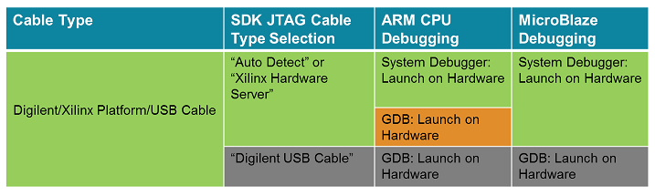

The table below shows the recommended usage of the debugger. The color key is:
Note: System Debugger is recommended for all debug flows in SDK for all processors and cables.

Debugging with the System Debugger
Copyright © 1995-2014 Xilinx, Inc. All rights reserved.